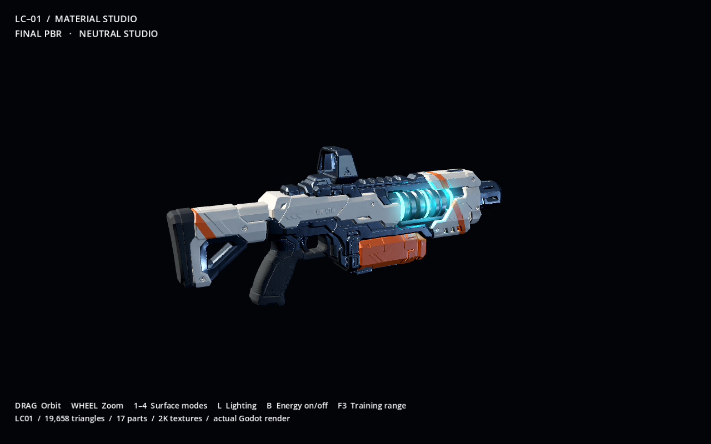
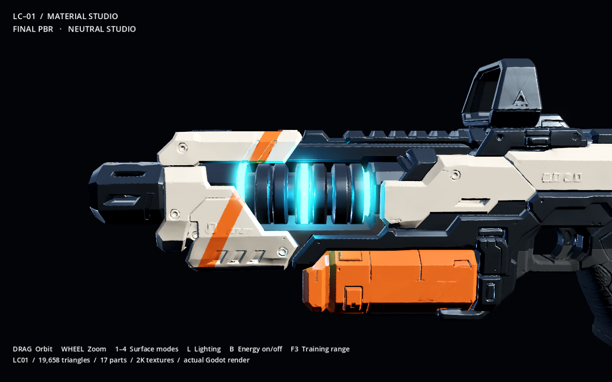

Godot 原生实机对照。修复高模 7 件、低模 5 件反向外表面，并重新烘焙。没有新增三角面、没有全局双面补丁、没有再次调用 Tripo。修复报告与复现方法
左侧：修复后 v2；右侧：上一版 v1。同一机位，背景和局部受光随辉光配置调整。

机位、材质底色及环境保持一致，关闭 emission 和局部补光，直接比较青色底色与发光效果。游戏检查室中按 B 切换。


枪托右侧：上壳、尾部与支架为正常外表面；保留原设计镂空。

枪托左侧：仍启用背面剔除，没有依赖透明或双面材质掩盖朝向错误。
右侧：完整金属筒体、三段亮芯与局部光晕。

左侧：外表面完整，近处金属与外壳能接收到青色补光。

无窗口 19/19、原生专项 29/29 通过；包括红点、命中、换弹、超宽窗口和新增的材质/辉光检查。当前为短时功能与视觉验证。
v1 检查漏掉了反向外表面，已补上逐件方向验收和左右侧实拍。局部不规则拓扑、碎 UV 和模糊刻字仍需后续精修；此次结论针对透面与能量环发光问题。